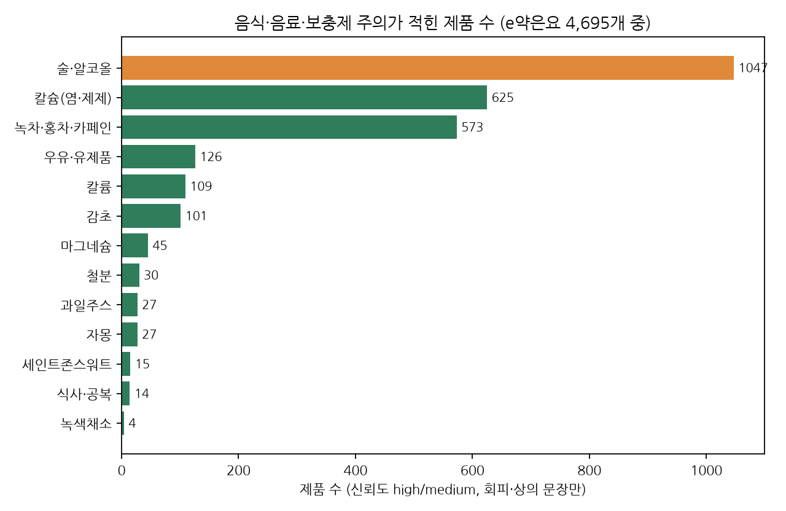
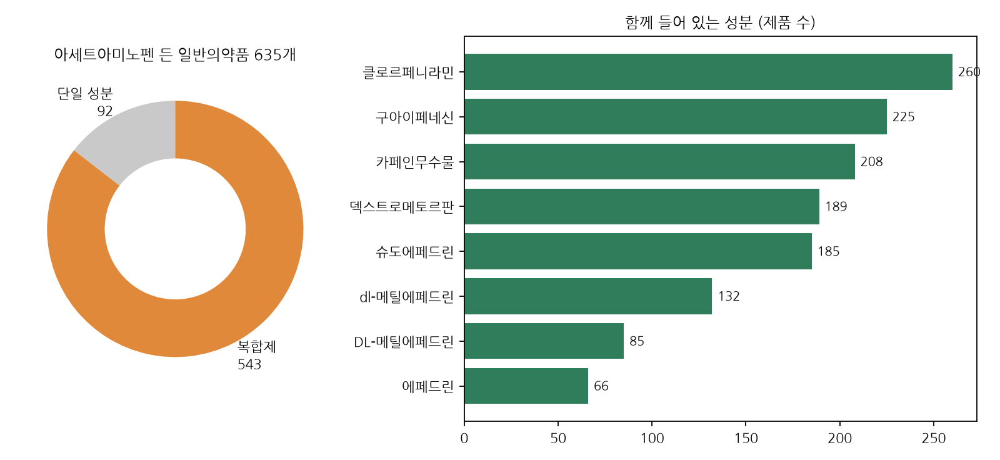
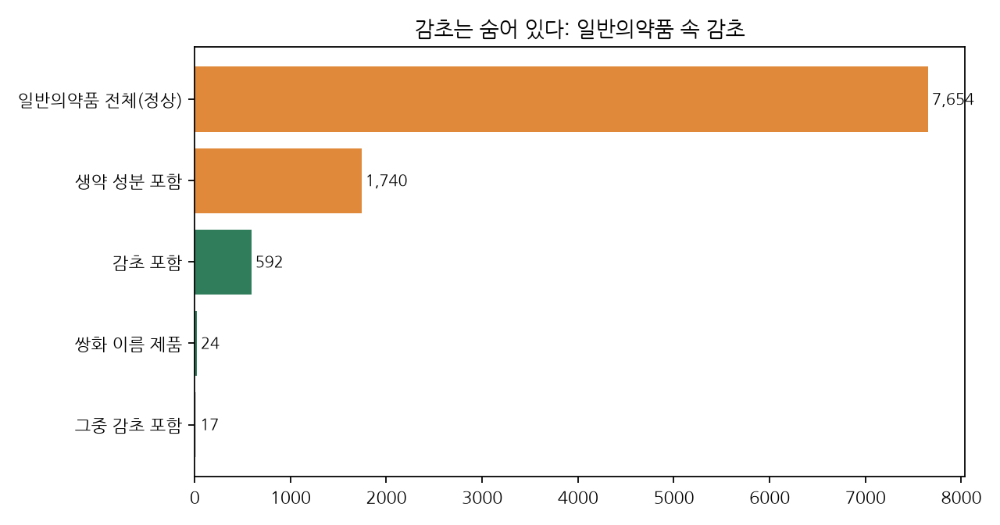
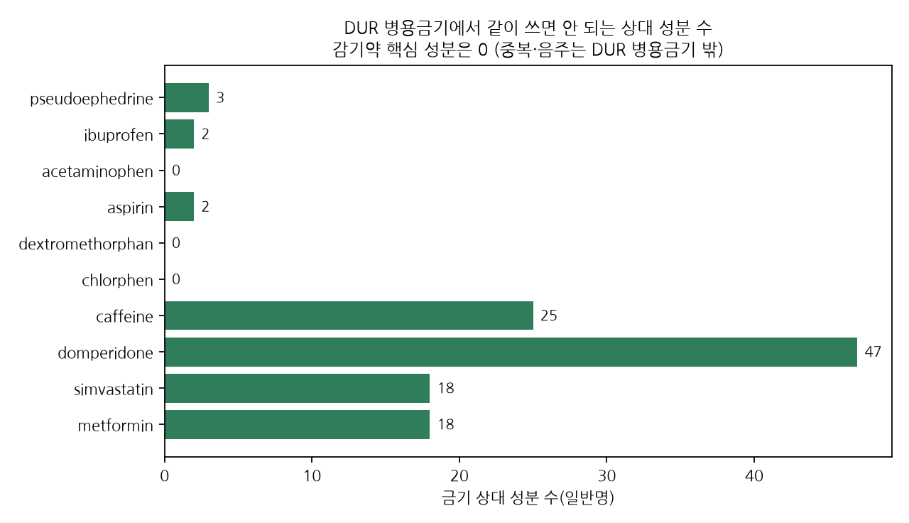

의약품 DB에서 찾은 것
식약처 허가정보·e약은요와 한국의약품안전관리원 DUR 병용금기 공개 파일로 만든 로컬 DB(SQLite)를 분석했어요. 2026-10-10 기준. 의료 조언이 아니라 밥심 규칙 설계용 자료예요.
1. 가장 많이 나오는 건 술이에요

술·알코올이 1,047개 품목으로 압도적이에요. 진통제, 감기약, 항히스타민제가 대부분이에요. 그다음은 칼슘염(625), 녹차·홍차(573)인데 둘 다 거의 비타민·미네랄·철분 제품에서 나와요. "녹차, 홍차 등 탄닌을 함유하는 차는 복용 전후에 피하십시오"라는 문장이 542번 반복돼요.
우유는 126개로, 장용정 변비약(비사코딜 48개)과 우르소데옥시콜산(32개)이 많아요. 자몽은 27개로 적은데, 알레르기약 펙소페나딘(14)과 경구피임약에 몰려 있어요. 세인트존스워트(15개)도 거의 피임약이에요.
성분 기준 개수: 칼슘염 269, 녹차·카페인 248, 술 209, 칼륨 156, 감초 153, 우유 60.
2. 아세트아미노펜은 대부분 숨어 있어요

정상 일반의약품 중 아세트아미노펜이 든 건 635개이고, 그중 543개(86%)가 복합제예요. 이름에 '타이레놀'이 없는 감기약, 몸살약, 생리통약, 한방 감기액(갈근탕플러스액, 금탕액 등)에도 들어 있어요. 아세트아미노펜과 카페인이 같이 든 일반의약품도 217개예요.
e약은요에 있는 아세트아미노펜 품목 453개는 모두 음주 주의 문구가 있어요.
3. 감초도 숨어 있어요

정상 일반의약품 592개에 감초가 들어 있어요. 쌍화 이름이 붙은 24개 중 17개에도 있고, 갈근탕, 십전대보탕, 우황청심원 현탁액, 위장약에도 있어요. 감초가 든 약의 라벨에는 대개 "칼륨함유제제, 감초함유제제와 함께 복용 시 상의"라고 적혀 있어요. 감초 든 약을 두 개 같이 먹지 말라는 뜻이에요.
인삼·홍삼이 든 일반의약품은 401개, 카페인이 든 일반의약품은 339개예요.
4. DUR 병용금기는 일상의 겹침을 못 잡아요

DUR 병용금기에는 아세트아미노펜, 덱스트로메토르판, 클로르페니라민, 와파린 쌍이 하나도 없어요. 술이나 음식도 원래 범위 밖이에요. 그래서 "감기약과 타이레놀 같이 먹기", "진통제 먹은 날 맥주" 같은 순간은 DUR로는 안 잡히고, 밥심이 라벨 문장으로 규칙을 직접 가지고 있어야 해요.
DUR에서 일상과 닿는 쌍은 이런 것들이에요.
| 조합 | 사유 |
|---|---|
| 슈도에페드린(코감기약) + 셀레질린·라사길린(파킨슨약) | 고혈압, 빈맥 |
| 돔페리돈(위장약) + 클래리스로마이신·플루코나졸·이트라코나졸·에스시탈로프람 | QTc 연장(부정맥) |
| 이부프로펜·덱시부프로펜·나프록센·아스피린 + 케토롤락 | 위장관 출혈 |
| 이부프로펜·아스피린 + 메토트렉세이트 | 혈액 독성 |
| 에르고타민+카페인(편두통약) + 마크롤라이드 항생제 | 맥각 독성 |
| 메트포르민 + 요오드 조영제 | 유산산성증 (DUR 쌍 수 1위) |
식약처 성분코드와 연결된 DUR 일반명은 685개 중 289개뿐이에요. 그 기준으로 일반의약품 성분이 낀 DUR 쌍은 109개 이상이에요.
5. 의외의 발견
- 음식 주의가 가장 많은 제품군은 감기약이 아니라 비타민·미네랄 제품이에요. 녹차·홍차, 칼슘염, 제산제를 피하라는 문장이 반복돼요.
- 자몽 주의는 혈압약이 아니라(전문의약품이라 e약은요에 거의 없어요) 알레르기약 펙소페나딘과 피임약에서 나왔어요. 펙소페나딘은 오렌지·사과주스도 함께 피하라고 적혀 있어요.
- 변비약 비사코딜과 우르소데옥시콜산은 우유 마신 뒤 1시간 안에는 먹지 말라고 적혀 있어요. 사진으로 바로 잡을 수 있는 순간이에요.
- 설사약 니푸록사지드는 "설사 중 생야채, 과일, 녹색채소, 매운 음식을 피하라"고 적혀 있어요.
- '티라민'으로 뽑힌 63건은 전부 '콜레스티라민'이었어요. 키워드 매칭만으로는 위험해서 검수가 꼭 필요해요.
6. 밥심 규칙에 주는 의미
| 제안 | 근거 |
|---|---|
| 고정 규칙 추가: 아세트아미노펜 + 술 | e약은요 453/453개 품목에 음주 주의. 아세트아미노펜 든 일반의약품 635개 |
| 고정 규칙 추가: 아세트아미노펜 중복(감기약·쌍화탕·진통제) | 86%가 복합제. DUR 병용금기에 없음 |
| 고정 규칙 추가: 감초 중복(한방 감기액·쌍화탕 + 감초 든 다른 약) | 감초 든 일반의약품 592개. 라벨에 감초 중복 주의 |
| 고정 규칙 추가: 철분·비타민 + 녹차·홍차, 칼슘·제산제 + 우유 | 542개 품목의 같은 문장 |
| 사진 규칙: 우유 + 비사코딜·우르소데옥시콜산 1시간, 자몽·과일주스 + 펙소페나딘 | 라벨 원문에 시간과 음식이 명시됨 |
| 사진에 안 잡히는 DUR 쌍(돔페리돈 + 항생제 등) | 사진이 아니라 '약 고르기' 단계에서 처리 |
| 브랜드→성분 표 | 활성 일반의약품 이름 7,468개, 그중 e약은요 문장이 있는 4,685개. 우선 수동 브랜드 35개(205품목)로 시작하고, 나머지는 품목명을 자동으로 매칭 |
데이터와 한계
출처: 식약처 의약품 제품 허가정보(43,250건, 최신 허가 2026-04-14), e약은요(4,695건), 한국의약품안전관리원 DUR 병용금기(2024-08-13 파일). 정부 사이트에 접속이 안 돼서, 공식 파일을 그대로 올린 공개 GitHub 미러를 SHA-256과 함께 기록해 썼어요.
빈 곳: 정상 일반의약품 3,016개와 전문의약품 대부분은 복약 설명 텍스트가 없어요. DUR 중복·임부·노인 금기도 아직 없어요.
추출 검수: 무작위 20건 중 18건이 맞았어요. 분석에 쓴 high/medium 신뢰도는 18/18이었어요. 표본이 작아서 출시 전에 약사 검토가 필요해요.
DB 위치: drugdb/drugs.sqlite · 스키마 SCHEMA.md · 품질 보고서 DATA_QUALITY.md